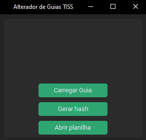
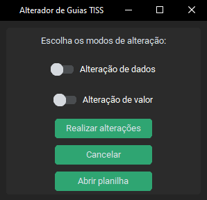

Alterador de Guias TISS
Prefácio
A ideia inicial desse projeto nasceu da necessidade de uma ferramenta
capaz de realizar alterações de dados em guias TISS (arquivos XML) de forma automatizada, com propósito
de otimizar o tempo gasto para essa tarefa que até então era feita de forma manual através
de editores de texto como ++Notepad, bloco de notas, etc.
Objetivo
Realizar alterações de dados e/ou valores de forma automática após leitura de critícas informadas pelo requerente,
conforme os chamados: 2022040943, 2022110809, 2022100571 e 2022110753.
Como utilizar
Localização do software
O executável do software poderá ser usado sem a necessidade de instalação
de outros programas e está localizado na seguinte pasta compartilhada:
O:\Informatica\Geral\Funcionais\Faturamento de Convênios\Alterador de Guias TISS
Funcionalidades
Leitura de críticas
Para realização das alterações, será preciso adicionar as críticas manualmente nas tabelas da planilha localizada no diretório
raiz do programa.
Tabela 1º Aba - Alteração de dados

Essa tabela é lida para alteração dos dados de procedimentos como: código de procedimento, tipo de tabela e unidade de medida. Seus campos devem ser preenchidos de acordo com as colunas.
Tabela 2º Aba - Alteração de valores

Essa tabela é lida para alteração de valores dos procedimentos. Caso os valores informados possuam casas decimais,
eles devem ser escritos com no máximo duas casas, separando o valor decimal com uma vírgula.
Botões
Ao abrir o programa verá a janela principal e alguns botões:

- Carregar Guia: abre uma janela para escolha de uma guia que deseja realizar alterações;
- Gerar hash: abre uma janela para escolha de uma ou mais guias, após a escolha
automaticamente gera um novo código hash e salva a guia no diretório de origem;
- Abrir planilha: abre a planilha de alterações no diretório raiz.
Após carregar uma guia é desbloqueado outras interações:

- Alteração de dados: define se a tabela de alteração de dados será lida e serão feitas as alterações;
- Alteração de valor: define se a tabela de alteração de valores será lida e serão feitas as alterações
- Realizar alterações: faz as alterações;
- Cancelar: retorna a janela padrão.
Observações
Para atender aos modelos de chamados citados no início e utilizar o software com máxima eficiência, muitas vezes será
possível o uso do clipboard na captura das críticas informadas no chamado e o inserçao das mesmas na
planilha de alterações, porém caso o formato não seja tabular, pode se utilzar o recurso no excel Texto para Colunas
e extrair/formatar as críticas corretamente.